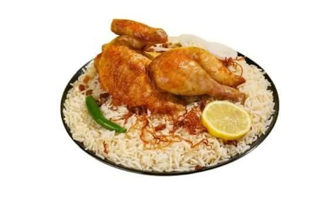
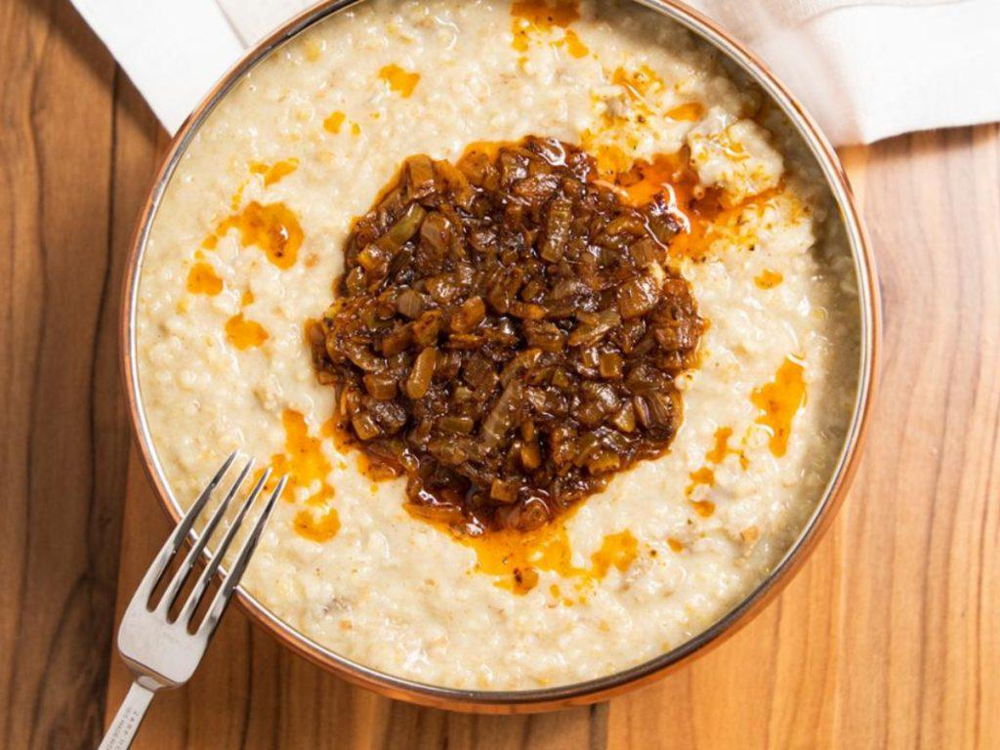
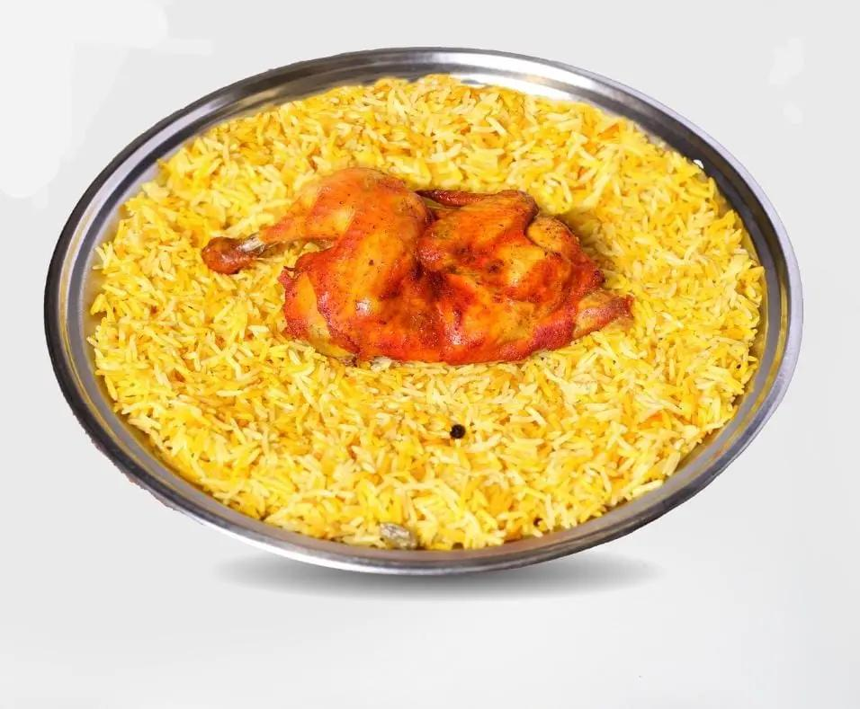
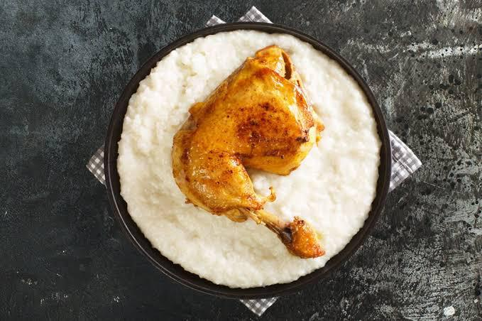

Kabsa

Kabsa is the national dish of Saudi Arabia. It is a rice-based dish made with meat and a blend of traditional spices.
Explore the authentic taste of Saudi Arabia
The Saudi kitchen is famous for its rich flavors and generous hospitality.

Kabsa is the national dish of Saudi Arabia. It is a rice-based dish made with meat and a blend of traditional spices.

One of the oldest traditional dishes, made from crushed wheat cooked with yogurt and seasoned with caramelized onions.

A traditional dish of slow-cooked meat and rice, famous across Saudi Arabia for its rich smoky flavor.

A creamy white rice dish from the Hejaz region, often served with chicken and a spicy sauce on the side.